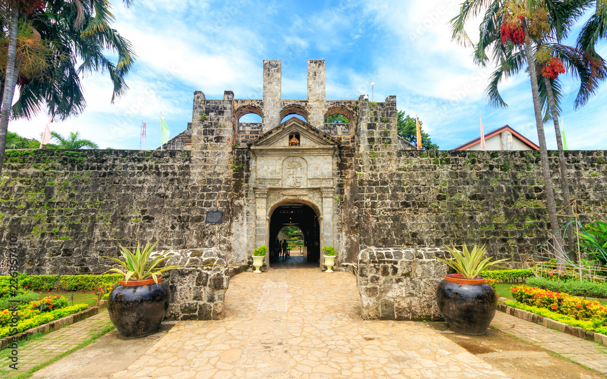
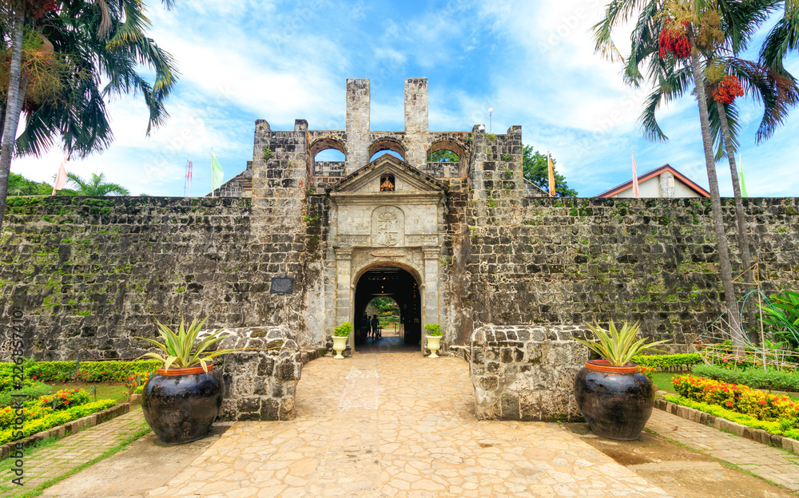
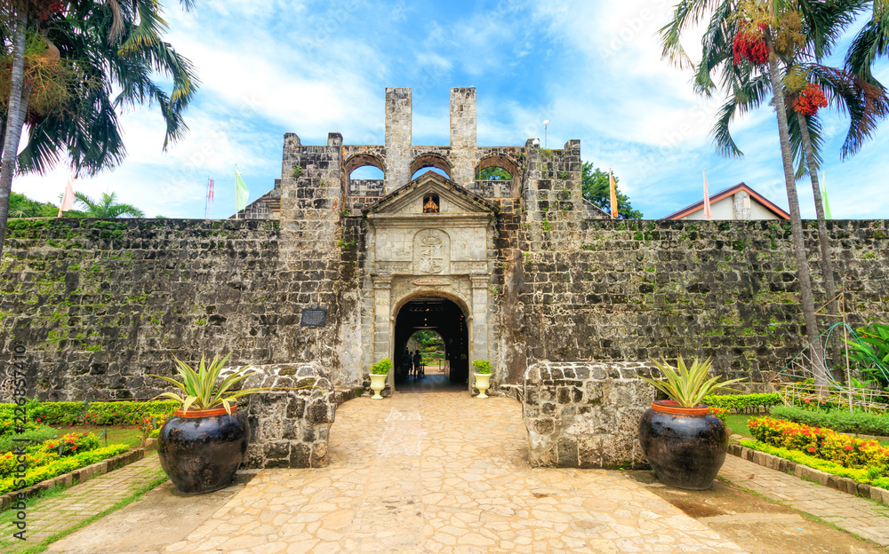
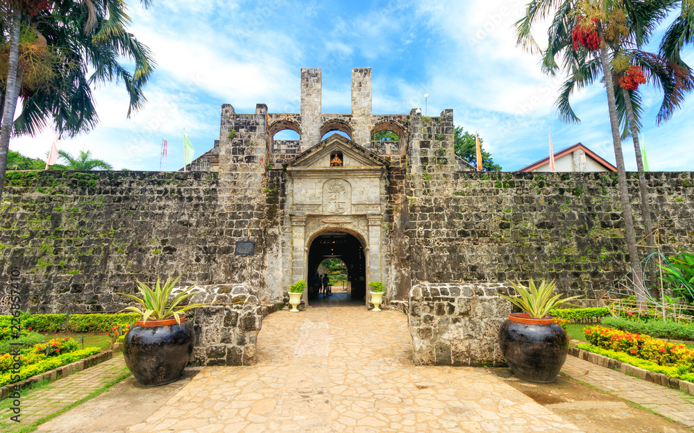

Simala Shrine, a breathtaking pilgrimage site in Southern Cebu, is renowned for its miraculous stories and awe-inspiring castle-like architecture. As one of the most visited religious sites in the Philippines, it draws thousands of devotees and travelers seeking blessings, miracles, and spiritual reflection.